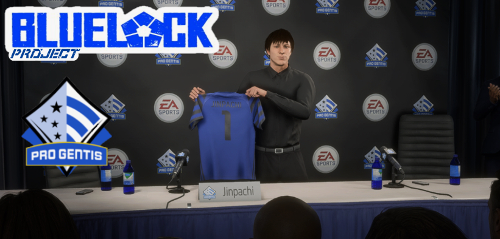
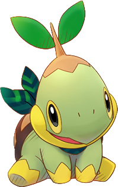

Blue Lock Project
Ayant pour objectif de s'imposer dans le monde du football, la fédération japonaise de football décide d'acheter un club de quatrième disvision anglaise avec des structures de formation ultra moderne.
L'objectif de se rachat et de former une nouvelle génération de joueur japonais talentueux et de s'imposer sur la scène anglaise puis européenne.
L'homme au coeur de se projet, Jinpachi Ego, est nomé entraineur de l'équipe nouvellement appelé Blue Lock. Son objectif est clair, remporter la Ligue des Champions avec sa génération de pépite japonaise qu'il aura formé.
C'est le Blue Lock Project.
